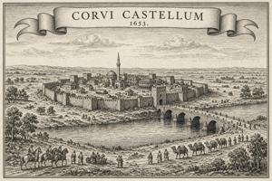
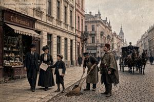

Вроновица

Вроновица (згур., дегл.: Vronovica; глаг.: ⰂⰓⰑⰐⰑⰂⰊⰜⰀ) — столица Бывшей Верхней Паннонии, расположенная на левом (северном) берегу Южной Дравы (Juzsna Drava). Основана в XVI веке как османскую крепость; за пять веков побывала административным центром османского санджака, австрийского военного генералата, Верхнепаннонского баната, а затем сменявших друг друга республиканских и королевских правительств независимой Верхней Паннонии. По Лозаннским соглашениям 1995 года город разделён Южной Дравой и Нейтральной зоной между двумя фактическими государствами - Згурской и Деглянской Республиками.
Название
Название «Вроновица» происходит от паннонского vron («ворон») и суффикса -ovica; приблизительный смысл — «Воронье гнездовье» или «Вороново место». Славянская форма неофициально бытовала весь османский и габсбургский период, а с провозглашением Первой республики в 1918 году стала единственным официальным названием.
Все пять названий города обыгрывают тему ворона: османское Kuzgun Qalesi (тур. «Воронья крепость») — по прозвищу основателя города, латинское Corvi Castellum, немецкое Rabenburg (оба означают «Воронья крепость»), венгерское Hollófészek («Воронье гнездо») и паннонское Vronovica, при этом саму крепость внутри города называют Vronov Grod («Воронов замок»).
Исторический обзор
Основание и османская эпоха
{kind=link}

Город основал Хаким Абаз-бей Кузгун, османский военачальник, чья подлинная биография основательно обросла легендами. Хаким участвовал в походе 1529 года, когда было разграблено и сожжено Брегово — главное славянское поселение региона и резиденция епископов. Приметив стратегически удобное место на северном берегу Южной Дравы, он основал там постоянное укрепление; строительство первой крепости началось около 1534 года.
Родом из кавказского племени, совсем недавно принявшего ислам, Хаким, по преданию, практиковал шаманские обряды, и ему приписывали способность обращаться вороном. Прозвище Kuzgun — «ворон» по-турецки — перешло сперва на крепость, а затем и на весь город.
Жива легенда о том, что в преддверии катастроф на территории крепости появляется огромный старый ворон и говорит на османском турецком. Это явление отмечали перед Первой мировой войной, венгерским вторжением 1940 года и началом гражданской войны 1992 года. В османских источниках XVI века Хаким фигурирует как заурядный пограничный военачальник; он превратился в культурного героя лишь в паннонской фольклорной традиции.
Около полутора столетий Кузгун Калеси служил административным центром Кузгунского санджака. На протяжении XVI века крепость расширяли: в ней появились казармы, мечеть, хаммам и караван-сарай, обслуживавший торговые пути в османскую Венгрию и к Адриатическому морю. Самой долговечной османской постройкой стал каменный мост через Южную Драву — Турецкий мост (Turski most): свыше двух веков он оставался единственной переправой в городе и стоит по сей день.
Габсбургская эпоха
{kind=link}

Австрийцы отвоевали Верхнюю Паннонию в кампании 1691 года; в том же году пал и Кузгун Калеси. За следующее десятилетие габсбургские власти снесли мечеть, хаммам и караван-сарай, а город, переименованный в Рабенбург, сделали центром сразу двух территориальных единиц — графства Верхняя Паннония и Верхнепаннонское военной границы (извесной также как генералат Верхняя Паннония).
В 1692–1701 годах австрийские инженеры перестроили крепость по принципам Вобана и прорыли Крепостной канал (Grodski ruv), отведя в него небольшой приток Южной Дравы, — так крепость превратилась в искусственный остров. Канал пересекали два моста: северо-западный Венский (Beczki most) и северо-восточный Будайский (Budajski most); оба в XIX веке перестроили в камне, и оба стоят по сей день.
В 1750-х годах императрица Мария Терезия профинансировала строительство на острове собора Святого Тибора в стиле позднего барокко по проекту придворного архитектора Николауса Пакасси. Собор, освящённый в 1755 году, символизировал австрийскую императорскую власть над Верхней Паннонией. В том же году верхнепаннонскую епископскую кафедру официальным переносом из разрушенного Брегово в Рабенбург, что закрепило за городом первенство не только административное, но и церковное.
В XIX веке город устойчиво рос и вышел за пределы крепостного острова. Осью нового строительства стал Будайский проспект, переименованный после Компромисса 1867 года в проспект короля Франца Иосифа. Между 1860 и 1914 годами проспект и параллельные ему улицы застроили типичными зданиями процветающего провинциального центра: выросли оперный театр, Музей истории и искусства, здание городского совета, Биржа, доходные дома и особняки в стиле эклектического историзма, а затем сецессиона. Здесь после всех потрясений XX века облик габсбургского центральноевропейского бульвара сохранился почти в неприкосновенности.
В 1870–1874 годах Мостовое кольцо (Mostovano Kolo) опоясало крепостной остров широкой дорогой и добавило городу два новых моста через Южную Драву. В 1882 году открыли конно-железную трамвайную сеть, а в 1901–1906 годах её электрифицировали. Водопровод дошёл до центральных кварталов в 1880-х годах, за ним последовало газовое, а затем электрическое уличное освещение. К югу от реки индустриализация породила целый район мастерских, заводов и рабочего жилья: он рос безо всякой планировки, пока не был снесён и застроен заново коммунистами в 1950-х годах.
Межвоенная эпоха
В 1918 году Австро-Венгрия распалась, и переименованная Вроновица стала столицей Первой республики. В 1920-е и 1930-е годы экономика буксовала, и рост города почти замер; новое строительство свелось к идеологически представительным парадным зданиям.
Такие постройки группировались вдоль Славянского проспекта (Slavjanska jezda) — бывшего проспекта королевы Елизаветы, — расширяя на запад застроенную территорию города. Главным памятником стал собор святых Кирилла и Мефодия, освящённый в 1932 году и призванный сменить собор Святого Тибора в роли духовного центра независимого паннонского государства. Архитектор Иштван Кочар соединил в его облике византийскую и балкано-славянскую церковную традицию с итальянским рационализмом и орнаментом ар-деко. Именно здесь короновались король Дроган I в 1934 году и королева Адель в 1936-м.
При диктатуре и монархии на остров, в бывшие габсбургские здания, переехала реорганизованная тайная полиция, а на Славянском проспекте расцвела милитаризованная парадная культура. Каждую неделю проходили шествия от Законодательного собрания (Zakonodarno Zgromadjenje, здание 1935 года в аскетичном рационалистском стиле) до Великоморавской площади перед собором; в них участвовали армейские части, гвардия Движения национального усиления (змочняки, «чёрные подтяжки») и студенческие колонны. В 1937 году на северной окраине построили стадион короля Дрогана (Graliscze Krola Drogana) на тридцать тысяч мест. В остальном облик старого города не менялся вплоть до венгерского вторжения в сентябре 1940 года.
Вторая мировая война
После венгерской аннексии город снова стал официально называться Холлофесек, и никак иначе; Славянский проспект переименовали в проспект Хорти. Паннонский язык изгнали из школ и делопроизводства; дроганистские формирования распустили. На еврейскую общину распространили расовое законодательство, действовавшее в Венгрии с 1938 года, хотя массовые депортации тогда ещё не начались.
В марте 1944 года немцы оккупировали город, и преследования переросли в истребление. Еврейское и цыганское население, сосредоточенное в Задравской части, депортировали весной и летом 1944 года; подавляющее большинство из них убили.
Осенью 1944 года Красная армия перешла в наступление и в тяжёлых боях к ноябрю выбила венгерские и германские войска; артиллерийские обстрелы и авиаудары нанесли немалый урон жилым кварталам и собору святых Кирилла и Мефодия. В декабре 1944 года Северын Гоубка прибыл во Вроновицу во главе просоветского временного правительства; в следующем году была провозглашена Народная Республика.
Социалистическая эпоха
Новое правительство заменило уличные названия эпохи оккупации: проспект Хорти стал проспектом Ленина, Будапештский проспект — проспектом Сталина, а Великоморавская площадь — площадью Малиновского. Крепостной остров передали Министерству народной безопасности (НООН), отчего в разговорном обиходе за организацией закрепилось прозвище «Грод» («Крепость»). К началу 1950-х большинство повреждённых войной зданий восстановили.
Куда существеннее изменилась запущенная Задравская часть. Ниже по течению построили ГЭС; уровень реки поднялся, и понадобилась защитная набережная вдоль берега — с неё и началась первая очередь перепланировки. Примерно с 1955 года обветшавшее рабочее жильё шло под снос; на его место вставали четырёхэтажные панельные дома — «гоубкины ящики» (Gowbczi skrynki) — тесные, но с водопроводом и электричеством. Следом появились школы, поликлиники и рабочие клубы.
В 1950–60-е годы политический курс не раз круто менялся, и улицы с площадями снова и снова переименовывали. Проспект Ленина стал проспектом генералиссимуса Гоубки, проспект Сталина — проспектом Миляны Гоубки, площадь Малиновского — площадью Тито, а после разрыва с Югославией в 1966 году — площадью Мао Цзэдуна.
В 1960-е годы к югу от реки развернули вторую программу строительства. Восьмиэтажные «гоубкины шкафы» (Gowbczi szatniki) — с лифтами, просторными квартирами и центральным отоплением — сменили «ящики» в качестве стандартного жилья и с 1965 года стали основой застройки Соцкостура («Социалистического города»). Район выстроили вдоль проспекта Народно-освободительной армии; его монументальной пешеходной осью стала Аллея Героев с двадцатичетырёхметровой бронзовой конной статуей Гоубки во главе, а между кварталами «шкафов» разместили культурные, административные и спортивные объекты. Строительство продолжалось вплоть до 1980-х годов. Исключением стал Народный дворец (Narodny Polac), предназначенный для размещения Центрального комитета партии, Совета министров и Законодательного собрания: его начали строить в 1971 году, к 1988-му возвели бетонную коробку здания, а в 1990 году финансирование прекратилось — так она и осталась самым заметным недостроем социалистической эпохи.
Пока город физически преображался, унифицировался и облик торговли: национализированные магазины и кафе обозначили по категориям и порядковым номерам — «Магазин одежды № 40», «Столовая № 72». Портреты генералиссимуса Гоубки — в мундире, в ораторской позе, а также в образе «отца нации» среди детей — появились в витринах, вестибюлях, школах и на транспортных узлах; на общественных зданиях в обязательном порядке вывешивали политические лозунги. Ежегодно город справлял два главных массовых мероприятия: первомайский парад от проспекта генералиссимуса Гоубки до площади Победы, и митинг на стадионе в День освобождения 17 ноября. С конца 1960-х на улицах, спроектированных для трамваев и пешеходов, росло число микроавтомобилей «Драва».
Постсоциалистическая эпоха
В 1990 году коммунистическое правительство пало, и улицы в третий раз массово переименовали. Проспекту генералиссимуса Гоубки вернули имя Славянский; проспект Миляны Гоубки переименовали в проспект Эньо Жлутоводого; площади Мао Цзэдуна вернули имя Великоморавской; главную ось Соцкостура назвали проспектом Освобождения.
С переходом к новой системе жизнь горожан лучше не стала. Демонтаж плановой экономики прошёл в 1990–1991 годах — быстрый, беспорядочный и, как считало большинство, коррупционный; заводы, не нашедшие покупателя, останавливались один за другим. К середине 1991 года безработица достигла примерно пятидесяти процентов, а в промышленных кварталах Задравской части была ещё выше. Центральные улицы захватил стихийный рынок: тротуары и площади заполнили торговцы, продававшие всё подряд — от излишков военного имущества до контрабанды. Образовавшийся вакуум быстро заполнили организованные преступные группировки.
Насилие ударило не по всем одинаково. На габсбургских проспектах севера, где жители в основном служили чиновниками и людьми свободных профессий, беспорядки давали о себе знать разве что шумом и явной деградацией городской среды. Тяжелее пришлось жителям Соцкостура и Задравской части. По социалистической жилищной программе рабочих из одного села направляли на один и тот же завод и селили в одном доме, что укрепляло соседскую солидарность в годы полной занятости; когда работа исчезла, эти землячества стали превращаться в квартальные дружины выраженного этнического характера.
В 1991 году противостояние развивалось по тем же этническим линиям: деглянские организации требовали сначала территориальной автономии, затем — отдельного конституционного статуса; згурцы расценивали эти требования как прелюдию к разделу страны. Квартальные дружины обзавелись политическими покровителями и превратились в инструмент территориальных требований. К осени 1991 года центральное правительство уже заметно теряло контроль над столицей.
Весной 1992 года вспыхнула полномасштабная гражданская война. По мере обрушения центральной власти национальная армия раскалывалась по этническому признаку: одни части в полном составе перешли под командование згурских или деглянских лидеров, другие распались, а их оружие и бойцов поглотили дружины самообороны. Регулярные части воевали бок о бок с этими неформальными отрядами, и бои шли улица за улицей, повсюду сопровождаясь намеренными зверствами. Когда линия фронта разделила город на две зоны контроля — север заняли згурские силы, юг — деглянские, — жители, оказавшиеся не на своей стороне, бежали сами или их изгоняли: дегляне уходили на юг, згурцы — на север. За несколько недель террор фактически разделил город надвое. Самые тяжёлые бои шли в Соцкостуре.
В 1995 году прибыли миротворческие силы ООН; Лозаннские соглашения установили перемирие и закрепили внутренние границы города. Нейтральная зона функционирует как относительно безопасная городская территория. За её пределами военные разрушения так и не устранены до конца, государственные учреждения недофинансированы или отсутствуют вовсе, а население воспринимает постоянный беспорядок как факт повседневной жизни.
Топография

Южная Драва делит город на Северную (Старую) Вроновицу на левом берегу и Южную (Задравскую) Вроновицу на правом.
Планировку Северной Вроновицы определяет крепостной остров. От него расходятся трое ворот с мостами, а от них лучами идут главные проспекты — эта Y-образная планировка структурирует город и по сей день.
От Венского моста (Beczki most) на северо-запад идёт Славянский проспект (Slavjanska jezda) — главная ось згурской зоны. От Будайского моста (Budajski most) на северо-восток тянется проспект Эньо Жлутоводого (Jezda Enja Zslutovodyj), проходящий через Нейтральную зону. От Турецкого моста (Turski most) проспект Независимости (Jezda Nepodstoja) на южной стороне реки уходит в Южную Вроновицу.
С позднегабсбургских времён Северная Вроновица делится на четыре нумерованных округа. Первый округ включает крепость и кварталы, прилегающие к Мостовому кольцу. Второй занимает северо-восточный сектор вдоль проспекта Эньо Жлутоводого, включая старое городское кладбище к югу от него. Третий занимает северо-западный сектор вокруг Славянского проспекта, а Четвёртый заполняет северный сектор между Вторым и Третьим.
Южную Вроновицу с севером соединяют Турецкий мост и два более поздних моста, Верхний и Нижний. Изначально она состояла из Пятого округа вдоль речного берега; при Гоубке к нему добавились Шестой и Седьмой округа, расположенные южнее и составившие Соцкостур.
Демография
Последняя достоверная цифра — 654 530 человек по переписи 1985 года. С тех пор общегородского учёта населения не проводили: после Лозаннских соглашений в городе утвердились две независимые администрации безо всякого механизма для совместной переписи. Обе стороны публиковали цифры, которые принято считать завышенными — в электоральных целях и ради гуманитарной помощи.
По оценкам ООН, постоянное население Нейтральной зоны составляет около 20 000 человек, згурской зоны — около 250 000, деглянской — около 400 000; итого около 670 000. За этим незначительным ростом с 1985 года скрывается глубокая стагнация: разницу объясняют военные потери, перемещение населения и непрекращающаяся эмиграция людей трудоспособного возраста.
Приблизительный этнический состав: около 260 000 згурцев (сосредоточены в згурской и Нейтральной зонах); около 360 000 деглян (в деглянской и Нейтральной зонах); около 40 000 цыган (преимущественно в деглянской зоне); и около 10 000 представителей прочих национальностей, распределённых по всем трём зонам. В эту последнюю категорию входит и около 1000 человек, до сих пор считающих себя паннонцами.
Из-за массовой эмиграции население заметно постарело против среднего по региону возраста. Больше всего недопредставлено поколение, родившееся примерно в 1991–1996 годах: во всех зонах его выкосили военная младенческая смертность, эмиграция и резкий спад рождаемости в годы краха.
Администрация
Нейтральная зона (в разговорной речи Нейтралка) охватывает крепостной остров, Мостовое кольцо с прилегающими кварталами, северо-восточный сектор вокруг проспекта Эньо Жлутоводого и старое городское кладбище. Её администрирует Управление городского хозяйства под эгидой ООН, а охраняет Полицейское подразделение FUPFOR. Периметр обнесён проволочным заграждением с охраняемыми КПП; пешеходов пропускают без проверки документов, автомобили досматривают. Все пять мостов находятся в пределах Нейтральной зоны, так что весь автотранспорт между берегами проходит через посты FUPFOR.
Згурская зона охватывает северо-западный сектор вокруг Славянского проспекта, северный сектор и окраинные районы левого берега. Ею управляет избираемый муниципальный совет; с 2000 года мэром служит Адам Влошек, одержавший подряд пять побед на более-менее альтернативных выборах.
Деглянская зона охватывает Задравскую часть и Соцкостур — почти весь правый берег. С 1999 года здесь действует военное положение. Недостроенный Народный дворец в начале 1990-х гг. был самовольно заселён цыганами и с тех пор фактически не починяется никакому административному контролю.
Единого городского органа власти не существует. В Нейтральной зоне действует Трёхсторонний согласительный комитет по муниципальным делам; его решения не имеют обязательной силы ни для одной из администраций, но именно он обеспечил рабочие договорённости по электроснабжению, водоснабжению и вывозу мусора для всех трёх зон.
Транспорт
Облик транспортной сети города отражает разные эпохи строительства. Габсбургская инфраструктура по большей части ещё действует — в основном в Нейтральной зоне. Участки, построенные позже, при социализме, ныне в згурской и деглянской зонах, содержатся неровно: одни поддерживают в порядке, другие давно забросили. Маршруты через нынешнюю границу оборвал раздел 1995 года.

Трамваи. Линии А и Б ходят по часовой и против часовой стрелки вдоль Мостового кольца ещё с габсбургских времён и остаются самым надёжным звеном сети. Дополнительные линии обслуживают главные проспекты левого берега. В деглянской зоне трамвайное сообщение не работает с 1992 года: пути в Задравской части и Соцкостуре повредили в ходе гражданской войны и так и не отремонтировали, а подвижной состав по большей части уничтожен или разграблен на металл. На нескольких улицах контактные провода до сих пор висят на месте — теперь на них крепят рыночные навесы и бельевые верёвки.
Метро. Систему скоростного подземного транспорта предложили ещё в 1970-е годы. Первая станция "Театральная площадь" была торжественно заложена в 1985 году; к 1990 году успели построить туннель до станции "Северный вокзал", после чего экономический кризис прервал строительство. Две станции не успели отделать; ныне обе они законсервированы, как и туннель, соединяющие згурскую и Нейтральную зоны. Нелегальный доступ через незадокументированные подземные коммуникации возможен, но сопряжён с рисками разного рода.

Автобусы и маршрутки. Регулярные автобусные маршруты работают во всех трёх зонах. В Нейтральной зоне автобусы ходят по расписанию. В згурской и деглянской зонах муниципальные линии дополнены — а на многих маршрутах и вовсе вытеснены — частными маршрутками: видавшие виды микроавтобусы на шестнадцать-двадцать мест (так называемые "миники"), обычно переполненные, почти без регуляторного надзора. Прямого сообщения между двумя зонами нет; желающим пересечь границу приходится ехать транзитом через Нейтральную зону.

Железная дорога. Северный вокзал (Sjeverny Kolostan) в згурской зоне обслуживает северное и западное направления; Южный вокзал (Juzsny Kolostan) в деглянской зоне — южное и восточное. Раньше их связывала соединительная линия по железнодорожному мостом выше по течению; мост взорвали в 1993 году, и с тех пор прямого сообщения между вокзалами нет. Международное железнодорожное сообщение не работает с 1992 года.
Авиация. Международный аэропорт имени короля Светоплока к северу от города входит в Нейтральную зону и находится в ведении FUPFOR. Он принимает чартерные рейсы в Западную Европу, обслуживает логистику и гуманитарные операции ООН, а также изредка — рейсы в соседние страны. Терминал — бруталистское здание начала 1970-х годов, спроектированное на городскую агломерацию в миллион жителей, — принимает меньше десятка коммерческих рейсов в сутки.
Категории: Населённые пункты, Вроновица